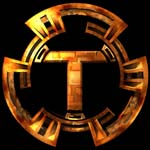
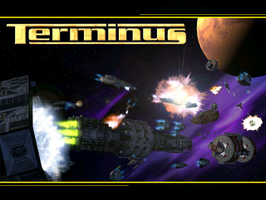
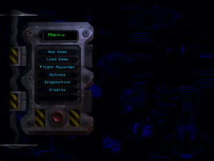
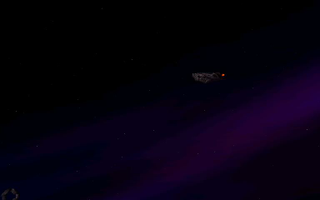

Terminus
Archivierte Anleitung
Dieser Artikel wurde archiviert, da er - oder Teile daraus - nur noch unter einer älteren Ubuntu-Version nutzbar ist. Diese Anleitung wird vom Wiki-Team weder auf Richtigkeit überprüft noch anderweitig gepflegt. Zusätzlich wurde der Artikel für weitere Änderungen gesperrt.
Zum Verständnis dieses Artikels sind folgende Seiten hilfreich:
200 Jahre in der Zukunft. Das Sonnensystem ist kolonisiert und gedeiht. Aber hinter der Fassade des Wohlstands hat ein Kampf um die Kontrolle begonnen. Die Erde und der Mars stehen am Rande eines bitteren Krieges. Handelsrouten werden von Piraten angegriffen und eine unbekannte Macht bedroht die Existenz der Menschheit. Betrete das Universum. Fliege als Kampfpilot, beraube als Pirat Konvois, betreibe Bergbau auf Asteroiden, verkaufe als Händler Güter, spiele einen Kopfgeldjäger oder lasse dich als Söldner anwerben. Das Spiel bietet eine einnehmende Story, Weltraumkampfsimulation mit realistischer Physik, ein Universum mit fortlaufender Handlung, künstliche Intelligenz und Multiplayer-Modus.
|  |  |  |
| Intro | Menü | Spielszene |
Installation¶
hfsutils
 mit apturl
mit apturl
Paketliste zum Kopieren:
sudo apt-get install hfsutils
sudo aptitude install hfsutils
Die Game Disc ins Laufwerk eingelegt. Nun die Datei Linux_Install mit Root-Rechten aufrufen. Das Spiel wird in den Pfad /usr/local/games/Terminus kopiert. Sofern man möchte anschließend die Installation der Movie Disc nach dem bekannten Muster einleiten. Hier werden lediglich zusätzliche Filmsequenzen eingespielt.
Die Dateien libstdc++2.10-glibc2.2  und libg++2.8.1.3-glibc2.2 herunterladen und entpacken [4]. Nun die jeweiligen Ordner öffnen und ebenfalls data.tar.gz entpacken. Aus den Ordner /usr/lib die Dateien libg++-3-libc6.2-2-2.8.1.3.so, libg++-libc6.2-2.so.3, libstdc++-3-libc6.2-2-2.10.0.so und libstdc++-libc6.2-2.so.3 in den Bibliotheksordner von Loki_Compat kopieren.
und libg++2.8.1.3-glibc2.2 herunterladen und entpacken [4]. Nun die jeweiligen Ordner öffnen und ebenfalls data.tar.gz entpacken. Aus den Ordner /usr/lib die Dateien libg++-3-libc6.2-2-2.8.1.3.so, libg++-libc6.2-2.so.3, libstdc++-3-libc6.2-2-2.10.0.so und libstdc++-libc6.2-2.so.3 in den Bibliotheksordner von Loki_Compat kopieren.
Symlink¶
Nun muss noch ein Symlink erzeugt werden [3]:
ln -s /usr/lib/libstdc++-3-libc6.2-2-2.10.0.so /usr/lib/libstdc++.so.2.8
Die Installation mit
sudo _POSIX2_VERSION=199209 ./Linux_Install
starten [3] und im Anschluß den Patch einspielen.
Patch¶
Hierfür den Patch von vvisions.com  herunterladen und entpacken [4]. In den Ordner wechseln und den Patch einspielen [1]:
herunterladen und entpacken [4]. In den Ordner wechseln und den Patch einspielen [1]:
sudo _POSIX2_VERSION=199209 ./termpatch /usr/local/games/Terminus/
Um das Spiel starten zu können muss noch ein Starter angelegt werden:
Starter¶
Nun mit einem Editor [5] mit Root-Rechten die Datei terminus-ok im Ordner /usr/local/bin/ mit folgendem Inhalt erstellen:
1 2 3 4 | #!/bin/bash export LD_PRELOAD=/usr/local/games/Loki_Compat/libg++-libc6.2-2.so.3:/usr/local/games/Loki_Compat/libg++-3-libc6.2-2-2.8.1.3.so:/usr/local/games/Loki_Compat/libstdc++-3-libc6.2-2-2.10.0.so:/usr/local/games/Loki_Compat/libstdc++-libc6.2-2.so.3 cd /usr/local/games/Terminus/ terminus +linux_sound_output /dev/audio |
Weitere Startoptionen können ergänzt werden:
| Startoptionen | |
| Parameter | Beschreibung |
+gfx_renderer opengl | Startet das Spiel mit opengl. |
+gfx_renderer glide | Glide verwenden. |
+linux_sound_output /dev/audio | Soundausgabe umleiten. |
Nun den Starter ausführbar machen:
sudo cp /usr/local/games/Terminus/terminus.xpm /usr/share/pixmaps/ sudo chmod 755 /usr/local/bin/terminus-ok
Das Spiel startet [6] nun durch Eingabe von terminus-ok und kann bei Bedarf zum Menü [7] hinzugefügt werden.
Im Spiel kann man verschiedenste Modi spielen.
Bedienung¶
Steuerung¶
Die Steuerung des Spiels kann durch einen Joystick, die Maus und über die Tastatur erfolgen. Eine vollständige Liste ist im Handbuch oder hier zu finden. Die Installation und Konfiguration eines Joysticks ist hier beschrieben.
Diese Basisinformationen sollen den Einstieg in das Spiel erleichtern.
Radar¶
Die Einheiten auf dem Radar:

| Radar | ||
| Farbe | Laufbahn | |
| Marauder | Plünderer | |
| Mercenary | Söldner | |
| Corsair | Pirat | |
| Lidless Eye | ||
| Siblings of the Vissar | Geschwister der Vissar | |
| Callisto Squadron | Callisto Geschwader | |
| Earth Military | Militär der Erde | |
| Mars Military | Militär vom Mars | |
Steuerung¶
Die wichtigsten Tastenkombinationen:
| Flugkontrolle | |||||||
| ↓ | Querachse erhöhen | ↑ | Querachse verringern | ← | nach links Gieren | → | nach rechts Gieren |
| A | vordere Schubdüse | Z | umgekehrter Schub | Q | linke Schubdüse | W | rechte Schubdüse |
| S | Schub erhöhen | X | Schubdüse verringern | Tab ⇆ | Schiff stoppen | C | Massenträgheitskompensator |
| Waffenkontrolle | |||||||
| Feuerwaffe | ⏎ | Waffe wählen | K | weiteres Ziel | J | das nächste Ziel | |
| U | Target Closest to Center | ⇧ + 0 | Scannerreichweite erhöhen | - | Scannerreichweite verringern | M | Multifeuerschalter |
| Interface | |||||||
| Strg + N | Navigation | Strg + E | Technik | Strg + C | Kommunikation | Strg + I | persönliche Informationen |
| diverses | |||||||
| Strg + D | Dock | V | Wurmlöcher aktivieren | T | Chat | Strg + Entf | Selbstzerstörung |
Die kompletten Steuerkommandos sind hier zu ersehen.
Demo¶
Ein Demo kann von vvisions.com , 3ddownloads.com und terminuspoint.com heruntergeladen werden.

Infobox¶
| Terminus | |
| Genre: | Rollenspiel |
| Sprache: | |
| Veröffentlichung: | 2000 |
| Publisher: | Vicarious_Visions |
| Systemvoraussetzungen: | Prozessor mind. P2-300 MHz - mind. 64 MB RAM - mind. 626 MB Festplattenspeicher |
| Medien: | CD (3) |
| Läuft mit: | native |

- Erstellt mit Inyoka
-
 2004 – 2017 ubuntuusers.de • Einige Rechte vorbehalten
2004 – 2017 ubuntuusers.de • Einige Rechte vorbehalten
Lizenz • Kontakt • Datenschutz • Impressum • Serverstatus -
Serverhousing gespendet von